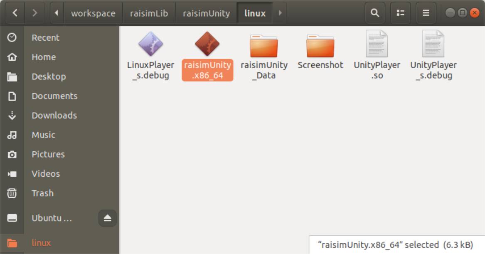
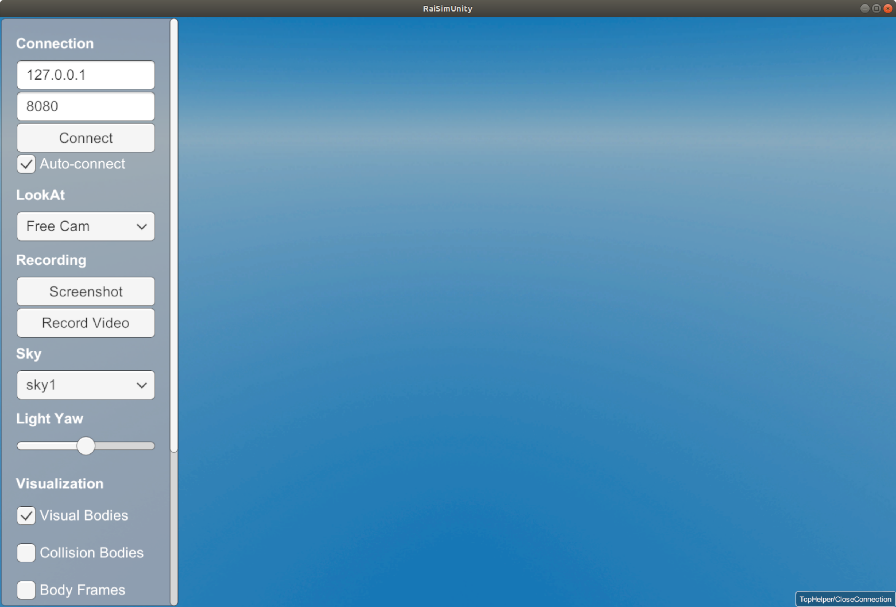
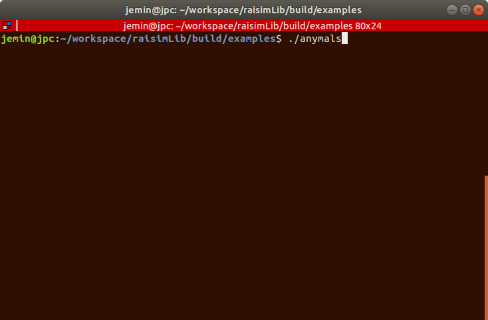
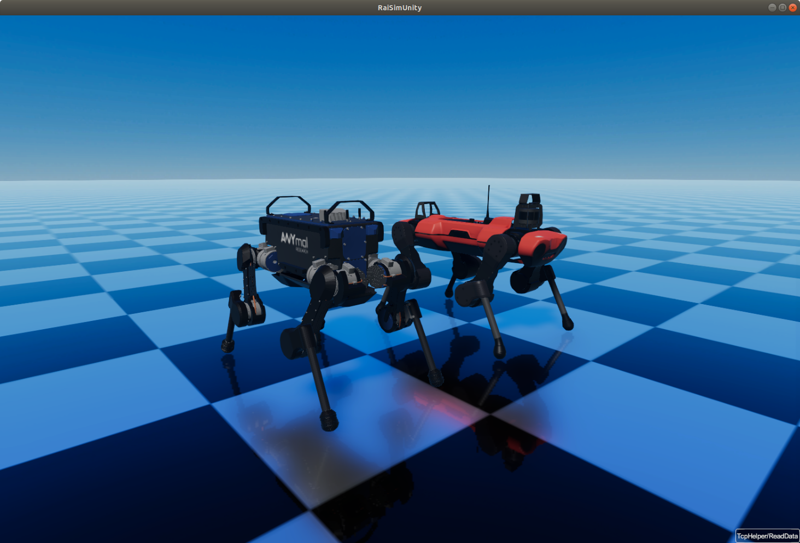
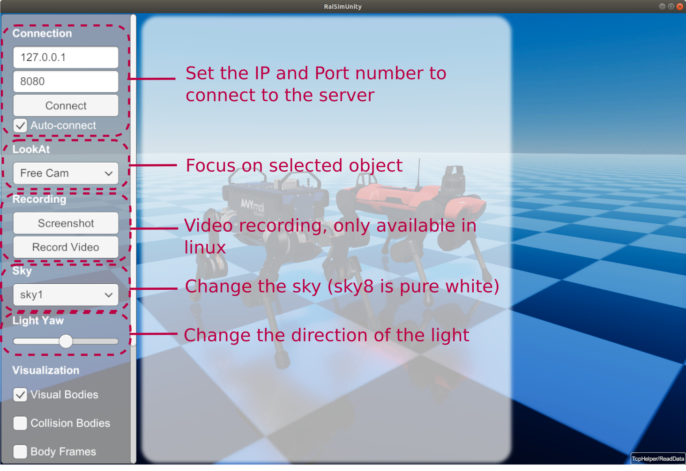
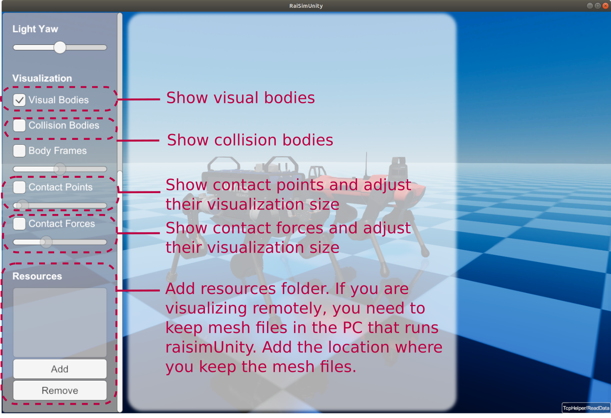
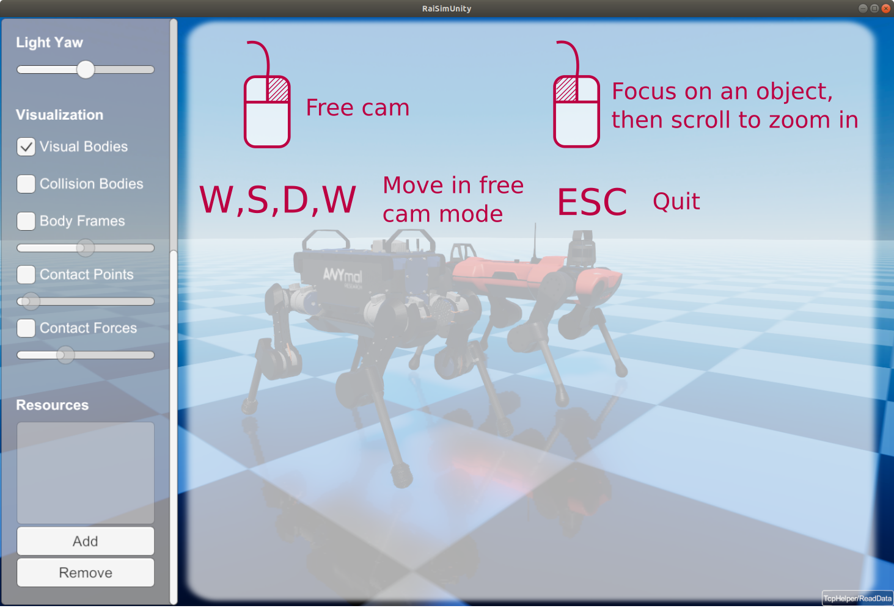

RaiSimUnity
RaisimUnity is a visualizer for RaiSim.
It communicates with RaiSim using a TCP/IP protocol.
Pre-built executables are provided in the raisimUnity directory.
Prerequisites
Make sure you have a Vulkan-capable GPU
On Linux, install Vulkan libraries: https://linuxconfig.org/install-and-test-vulkan-on-linux
On Ubuntu, run
sudo apt install minizip ffmpegUpdate your GPU driver. Use the version recommended by PyTorch or the latest available
Grant permission to run the app
Your OS may flag this app because it is not notarized. You can allow the OS to run the app as follows.
On Linux
Open a terminal, go to the RaisimUnity/linux directory, and run:
chmod +x ./raisimUnity.x86_64
On Windows
Double-click the app and select “Run anyway.”
On macOS
You will see one of the following messages:
“RaiSimUnity cannot be opened because it is from an unidentified developer. Your security preferences allow installation of only apps from the App Store and identified developers.”
“RaiSimUnity cannot be opened because the developer cannot be verified.”
“macOS cannot verify that this app is free from malware.”
In Finder, locate the RaisimUnity executable, control-click it, then choose Open twice.
How to use RaisimUnity
1. Create your simulated world in RaiSim, then create a server and attach the world. An example is provided below.
/// launch raisim server
raisim::RaisimServer server(&world);
server.launchServer();
while(1) {
raisim::MSLEEP(2);
server.integrateWorldThreadSafe();
}
server.killServer();
Run the RaisimUnity executable (from the
raisimUnitydirectory).


Run your simulation.

4. If the IP address and port match, RaisimUnity will connect automatically.
You can disable auto-connection by clearing the auto-connect checkbox.

Quick reference:



Object appearances
You can specify the appearance of an object using raisim::SingleBodyObject::setAppearance.
If you want to hide an object completely in RaisimUnity, set its appearance to hidden-unity.